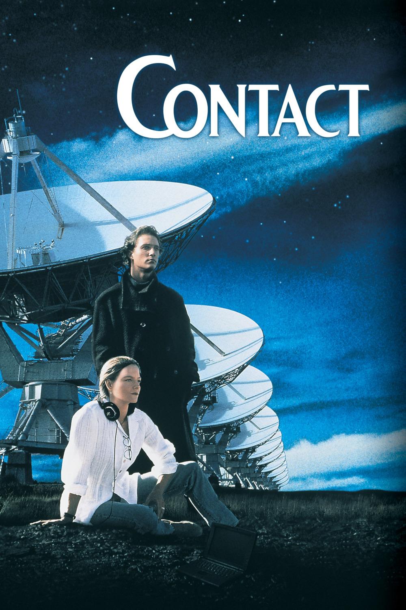

Мировая премьера: 11 июля 1997
Слоган: Путешествие к сердцу Вселенной.
Сюжет: Станет ли конец тысячелетия началом новой эры? Астроному Элли Эрроуэй удалось записать сигнал с Веги. Расшифровка показала, что внеземная цивилизация назначает человечеству свидание в космосе. Теперь Элли собирается лететь навстречу неизвестному...
Режиссёр: Роберт Земекис
В основе: Роман Карла Сагана "Контакт" (США, 1985)
В ролях: |
Джоди Фостер | Доктор Элли Эрроуэй |
| Мэттью МакКонахи | Палмер Джосс | |
| Том Скерритт | Доктор Дэвид Драмлин | |
| Джеймс Вудс | Майкл Китц | |
| Джон Хёрт | С.Р. Хэдден | |
| Уильям Фихтнер | Доктор Кент Кларк | |
| Дэвид Морс | Тед Эрроуэй | |
| Таккер Смоллвуд | Руководитель миссии Стив | |
| Джеффри Блейк | Фишер | |
| Анджела Бассетт | Рейчел Константин | |
| Максимильян Мартини | Уилли | |
| Джена Мэлоун | Юная Элли | |
| Роб Лоу | Ричард Рэнк | |
| Джейк Бьюзи | Джозеф |
Бюджет: $ 90 млн.
Кассовые сборы в США: $ 101 млн.
Кассовые сборы в мире: $ 171 млн.
Продолжительность: 2 ч. 22 мин.
Рейтинг: 7.5